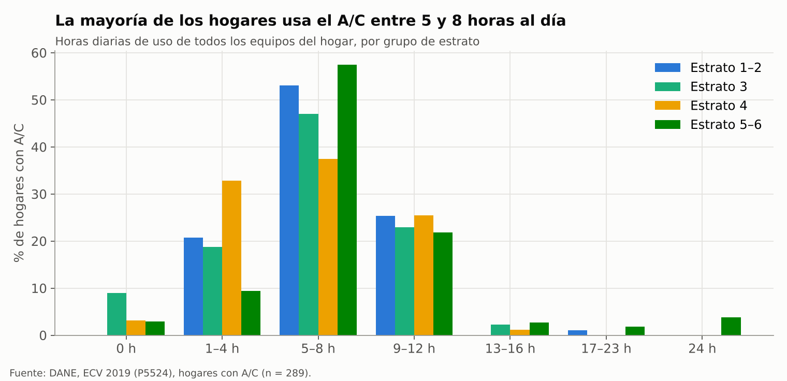
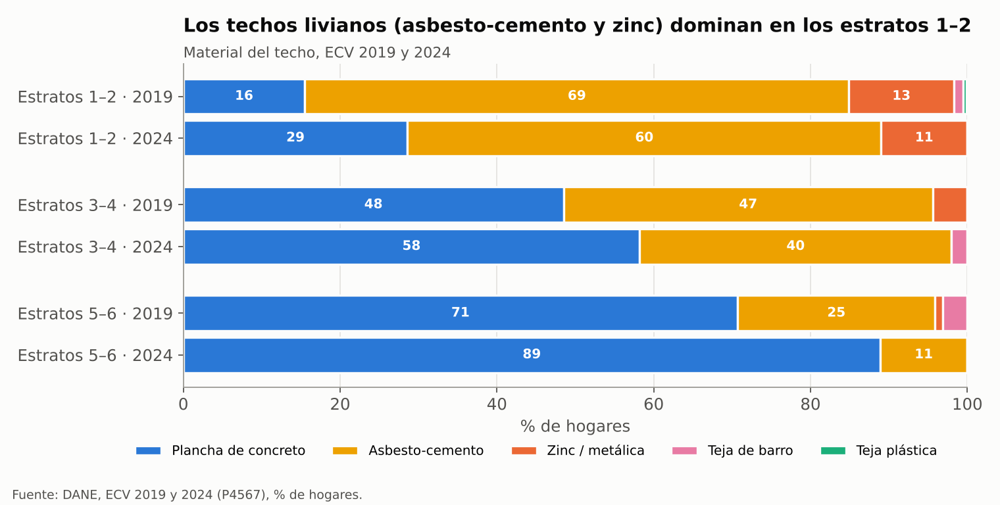
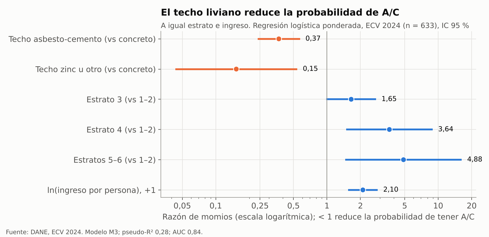
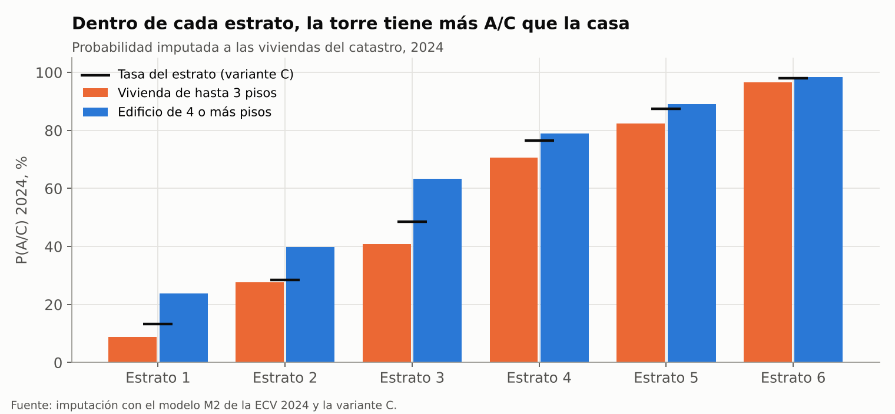
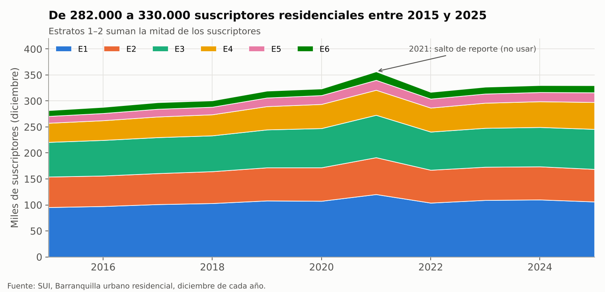
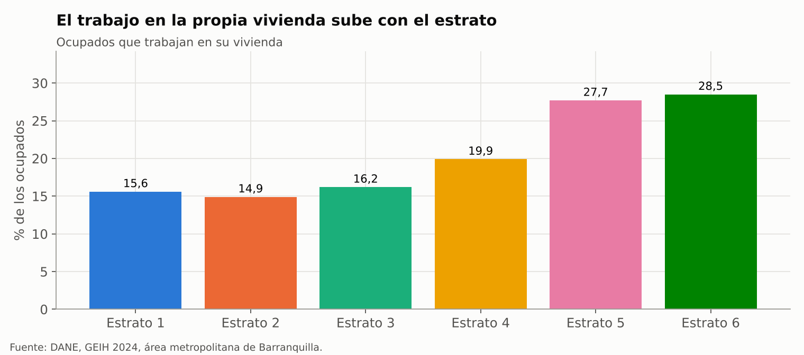

Resultados#
4.1 Tenencia de AC por estrato, ECV 2019 y 2024#
Estrato |
AC 2019 (n) |
AC 2024 (n) |
|---|---|---|
E1 |
7,7 % (436) |
12,4 % (250) |
E2 |
25,1 % (155) |
34,2 % (161) |
E3 |
42,7 % (148) |
45,8 % (125) |
E4 |
53,8 % (113) |
78,2 % (52) |
E5 |
86,7 % (47) |
81,3 % (38) |
E6 |
98,3 % (58) |
100 % (20) |
Ciudad postestratificada |
33,5 % ± 2,8 |
41,4 % ± 3,3 |
Otras cifras 2024: AC por quintil 17,2 / 15,6 / 27,8 / 42,0 / 83,1 % (sin hogares de ingreso 0: 12,8 / 16,5 / 27,8 / 43,8 / 82,9 %); techo E1–2 concreto 28,6 %, asbesto 60,4 %, zinc 11,0 %; E3–4: 58,2 / 39,8 / 0; E5–6: 88,9 / 11,1 / 0. Pago mediano sin/con AC 2024: E1–2 104.000 / 140.000; E3–4 215.000 / 324.000; E5–6 276.000 / 620.000 COP/mes. Distribución por estrato en la ECV 2024: 38,6 / 22,5 / 20,6 / 9,0 / 6,0 / 3,4 %. Ciudad 2024: 64,7 % apartamentos, 47,2 % vivienda propia, 3,46 personas por hogar, nevera 91,4 %, ventilador 98,4 %.
4.2 Serie anual postestratificada (sin suavizar)#
Año |
2018 |
2019 |
2020 |
2021 |
2022 |
2023 |
2024 |
2025 |
|---|---|---|---|---|---|---|---|---|
% AC ciudad |
34,8 |
33,3 |
41,3 |
39,6 |
36,6 |
40,1 |
41,4 |
44,9 |
IC95 ± pp |
2,7 |
2,8 |
2,7 |
2,5 |
3,1 |
3,1 |
3,3 |
3,5 |
Pesos crudos ECV |
34,0 |
30,9 |
36,3 |
36,3 |
32,3 |
35,6 |
37,1 |
39,2 |
Tendencia +1,2 pp/año (EE 0,24); sin 2020–2021 +1,4 (EE 0,25). Cambio 2019→2025: +11,6 pp (z ≈ 5,1), de ellos 10,4 pp por tasas dentro de cada estrato y 1,2 pp por composición. 2019 con P1077S11 = 33,3 %; con P5523 = 33,5 %.
4.3 Serie suavizada 2015–2027, variante A (sensibilidad)#
Nota
Esta es la variante A. El modelo usa la variante C; ver el capítulo «Serie de tenencia, error de la encuesta e imputación».
Año |
E1 |
E2 |
E3 |
E4 |
E5 |
E6 |
Ciudad (SUI) ± DE |
|---|---|---|---|---|---|---|---|
2015* |
5,0 |
22,9 |
32,7 |
62,4 |
79,8 |
93,7 |
29,8 ± 2,7 |
2016* |
5,6 |
23,6 |
34,3 |
64,5 |
80,9 |
94,7 |
31,2 ± 2,3 |
2017* |
6,3 |
24,3 |
36,0 |
66,5 |
82,0 |
95,6 |
32,5 ± 2,0 |
2018 |
7,0 |
25,0 |
37,7 |
68,5 |
83,0 |
96,3 |
33,4 ± 1,6 |
2019 |
7,8 |
25,7 |
39,5 |
70,4 |
84,0 |
96,9 |
35,1 ± 1,3 |
2020 |
8,7 |
26,4 |
41,2 |
72,3 |
85,0 |
97,4 |
36,5 ± 1,1 |
2021 |
9,7 |
27,2 |
43,0 |
74,1 |
85,9 |
97,9 |
37,6 ± 1,0 |
2022 |
10,8 |
27,9 |
44,8 |
75,8 |
86,7 |
98,2 |
39,3 ± 1,0 |
2023 |
11,9 |
28,7 |
46,6 |
77,4 |
87,5 |
98,5 |
40,4 ± 1,2 |
2024 |
13,2 |
29,5 |
48,5 |
79,0 |
88,3 |
98,8 |
41,8 ± 1,5 |
2025 |
14,7 |
30,3 |
50,3 |
80,4 |
89,0 |
99,0 |
44,0 ± 1,9 |
2026* |
16,2 |
31,1 |
52,1 |
81,8 |
89,7 |
99,2 |
45,3 ± 2,2 |
2027* |
17,9 |
31,9 |
54,0 |
83,1 |
90,4 |
99,3 |
46,7 ± 2,6 |
* extrapolado. Valores en %. DE y parámetros Beta (α, β) de cada celda en Serie_suavizada_AC_2015_2027.xlsx y Tenencia_AC_suavizada_estrato_2015_2027.csv.
Ajuste por estrato (cambio del logit por año, EE, p, sobredispersión): E1 +0,118 (0,055) p 0,03 φ 3,6; E2 +0,038 (0,043) p 0,39 φ 2,5; E3 +0,073 (0,027) p 0,01 φ 1,0; E4 +0,091 (0,108) p 0,40 φ 6,8; E5 +0,072 (0,114) p 0,53 φ 2,3; E6 +0,188 (0,228) p 0,41 φ 1,0.
4.4 Uso (ECV 2019), sin cambios#


Figura 12 Distribución de horas de uso del A/C.#
Horas de AC (hogares con AC): mediana 8 h/día (6 h en E3 y 7 h en E4); media 7,2; 17 % usa 12 h o más, 3,4 % más de 12 h, 1 % 24 h (7 % en E6). Tipo: 92,5 % mini-split, 3,1 % ventana, 4,4 % central (17,7 % en E6).
Ventilador: con AC 9,8 h/día, sin AC 11,1 (razón 0,88). Por estrato, razón con/sin AC: E1 0,97; E2 0,90; E3 0,96; E4 1,07; E5–E6 sin datos suficientes (7 y 1 hogares sin AC). Se excluyeron 9 respuestas > 24 h. El A/C desplaza menos de media hora de ventilador al día en E1, E3 y E4 y 1,2 h en E2, de modo que \(p_c\), la probabilidad de que el ventilador siga encendido mientras funciona el A/C, es alta: ≈ 0,95, con rango de 0,8 a 1,0 (ver «Insumos del modelo»).
Número de equipos: la ECV 2019 no lo pregunta. Prior desde horas y AC central. La zona climatizada típica de CEELA confirma lo que cita la propuesta: una habitación en VIS y E3–E4, toda la vivienda en E5–E6 (Tabla 21).
4.5 Techo y regresión logística#
Variable (referencia) |
2019, M3 |
2024, M3 |
2024, M4 |
|---|---|---|---|
Asbesto-cemento (vs concreto) |
0,57 (0,36–0,91) |
0,37 (0,24–0,57) |
0,37 (0,24–0,58) |
Zinc u otro (vs concreto) |
0,22 (0,09–0,57) |
0,15 (0,04–0,54) |
0,16 (0,04–0,56) |
E3 (vs E1–2) |
2,1 (1,2–3,5) |
1,7 (1,0–2,8) |
1,7 (1,0–2,8) |
E4 (vs E1–2) |
2,1 (1,2–3,9) |
3,6 (1,5–8,9) |
3,5 (1,4–8,5) |
E5–6 (vs E1–2) |
36 (12–109) |
4,9 (1,5–16) |
4,7 (1,4–15) |
ln(ingreso por persona) |
2,31 (1,80–2,97) |
2,10 (1,55–2,86) |
2,10 (1,52–2,90) |
Apartamento (vs casa) |
1,11, p 0,63 |
1,09, p 0,71 |
1,11, p 0,67 |
Arriendo / otra tenencia / hogar 5+ |
1,00 p 0,99 / 0,75 p 0,33 / 1,09 p 0,73 |
||
n, pseudo-R², AUC |
944, 0,32 |
633, 0,28, 0,84 |
633, 0,28, 0,84 |
Modelo M2 2024 (techo + estrato), usado en la imputación: b_asbesto = −1,061, b_zinc/otro = −1,954. Todos los coeficientes en Logit_ECV2024_modelos.csv.


Figura 13 Material del techo por grupo de estrato.#


Figura 14 Razones de momios del modelo M3, ECV 2024.#
4.6 Posición frente a la cubierta (catastro) e imputación de P(AC)#


Figura 15 P(A/C) imputada por tipo de edificio, variante C.#
Estrato |
Casa |
Último piso |
Intermedio |
1.er piso con vivienda encima |
En edificio 4+ |
P(AC) 2024 edificio 4+ |
P(AC) 2024 hasta 3 pisos |
|---|---|---|---|---|---|---|---|
E1 |
62,1 % |
6,6 % |
19,7 % |
11,6 % |
29,5 % |
23,9 % |
8,8 % |
E2 |
84,0 % |
6,5 % |
4,8 % |
4,7 % |
7,3 % |
41,0 % |
28,6 % |
E3 |
52,7 % |
10,5 % |
27,3 % |
9,3 % |
33,9 % |
63,3 % |
40,9 % |
E4 |
21,3 % |
13,0 % |
55,7 % |
9,8 % |
69,4 % |
81,3 % |
73,5 % |
E5 |
17,5 % |
14,0 % |
57,8 % |
10,5 % |
73,8 % |
90,0 % |
83,5 % |
E6 |
10,2 % |
10,3 % |
71,9 % |
7,4 % |
84,2 % |
99,0 % |
97,8 % |
Total |
54,5 % |
8,9 % |
27,4 % |
9,1 % |
Ciudad 2024 con el catastro: 41,3 % (≈ 137.500 viviendas con AC), frente a 41,8 % de la serie suavizada postestratificada (41,4 % sin suavizar). Serie del catastro 2015–2027: 30,7 / 31,8 / 32,9 / 34,1 / 35,2 / 36,4 / 37,6 / 38,8 / 40,0 / 41,3 / 42,6 / 43,9 / 45,3 %.
P(AC) media por posición (2024): casas con cubierta propia 27,8 %, primeros pisos 42,1 %, últimos pisos 50,9 %, intermedios 64,7 %. Lectura: la diferencia es sobre todo efecto del estrato (estandarizada: 36,9 / 43,1 / 43,9 / 50,3 %) y el resto viene del supuesto de imputación, no de una observación.
4.7 SUI 2015–2025 (kWh/mes por suscriptor, meses válidos)#


Figura 16 Suscriptores residenciales por estrato.#
Año |
E1 |
E2 |
E3 |
E4 |
E5 |
E6 |
Total |
GWh/año |
Suscriptores dic |
|---|---|---|---|---|---|---|---|---|---|
2015 |
308 |
250 |
286 |
367 |
466 |
776 |
325 |
1.071 |
281.920 |
2016 |
315 |
251 |
281 |
365 |
461 |
763 |
325 |
1.118 |
288.197 |
2017 |
342 |
256 |
284 |
361 |
448 |
751 |
336 |
1.182 |
297.165 |
2018 |
288 |
236 |
275 |
342 |
422 |
704 |
307 |
1.110 |
300.745 |
2019 |
286 |
231 |
265 |
330 |
410 |
681 |
300 |
1.133 |
319.399 |
2020 |
299 |
229 |
264 |
337 |
416 |
735 |
306 |
1.184 |
323.568 |
2021 |
293 |
212 |
245 |
312 |
369 |
614 |
286 |
1.177 |
356.575 (sospechoso) |
2022 |
312 |
213 |
228 |
312 |
360 |
599 |
283 |
1.156 |
317.080 |
2023 |
325 |
213 |
250 |
340 |
419 |
727 |
316 |
1.229 |
327.032 |
2024 |
318 |
205 |
245 |
319 |
396 |
690 |
299 |
1.178 |
330.101 |
2025 |
317 |
196 |
242 |
324 |
389 |
692 |
297 |
1.181 |
329.892 |
Estacionalidad (2019–2025; igual con 2015–2025): alza ago–sep vs feb–mar +11 % (E1) a +28 % (E6), total +19 %. Ningún mes de 2015–2018 tiene bandera de calidad.
4.8 Ocupación (ENUT/GEIH), sin cambios#


Figura 17 Trabajo en la propia vivienda.#
En 82–86 % de los hogares alguien está en casa todo el día hábil; un ocupado pasa ≈ 7,7 h fuera. Jornada escolar: 57,6 % mañana, 24,9 % tarde, 11,1 % única, 5,1 % noche. Trabajo en casa (GEIH): 15,6 % de los ocupados en E1 a 28,5 % en E6.